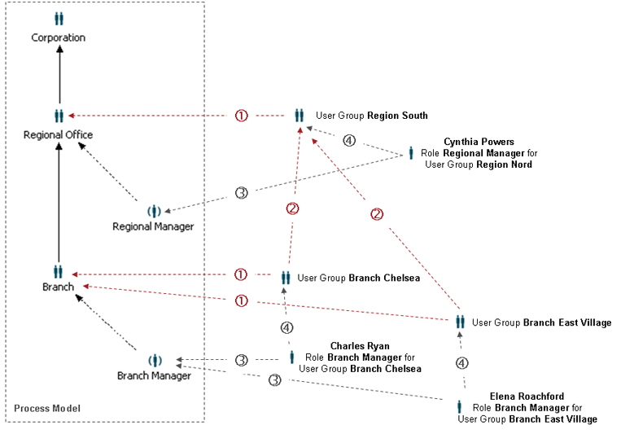

Working with scoped participants provides the ability to filter roles with a target department. The benefit is the ability to map real world organizational structures to clean process models and reflect their way of cross-organizational work properly during process execution. Stardust allows departments as runtime instances of organizations.
In the Tutorial Guide, you find a detailed use case to demonstrate the usage of departments in the modeler and the Stardust Portal. Please refer to the section The Scoped Participant Example of the Tutorial Guide.
It is possible for organizations at modeling time to add a target department, which is evaluated at runtime. This target department is described as a data path to process data which returns a scope key to identify a department representing this target department. This could be for example a user group for a bank branch X or a fund Y. The following diagram illustrates this concept:

Figure: Example Organizational Structure
The example organizational structure displayed in the figure above demonstrates the following relationships:
When a department is created, it may be assigned to an organization (as indicated as relationship (1) in the example organizational structure above), which is a precondition to using this department as a role scope.
If a department is assigned to an organization, all departments for the organizations, the organization of the current department is part of, have to be specified (relationship (2)).
Roles are implicitly scoped via the next scoped organization above. In case a user is assigned to an implicitly scoped role, the role (relationship (3)) and the departments for all organizations the role has a "Works For" or "Is Manager Of" relation, have to be specified. This relationship is marked as in the example organizational structure above.
This section covers the following issues:
All organizations and roles underneath a scoped organization inherit the target department of this organization. Hence, for every participant the relevant target department is the target department of the next scoped organization upwards the organizational hierarchy.
Please note that only pure tree structures for organizational hierarchies are supported. Neither roles nor organizations may be assigned to more than one organization. Matrix structures can be mapped by disjoint organizational structures with possibly different target departments (e.g. branch vs. project), whereby users might be assigned to roles in both structures.
When an organization gives you the ability to create departments under it in the Stardust Process Portal then that organization is called explicitly scoped organization in Stardust. The participants created under the explicitly scoped organization inherit the scope of that organization.
An organization which has at least one organization in the upward hierarchy as explicitly scoped is said to be implicitly scoped organization. This organization inherits the scope of all the organizations upwards in the hierarchy. However, departments cannot be created for an implicitly scoped organization.
You can determine that an organization is allowed to support departments and specify the data and data path for the according department OID in the property page of an organization. Please refer to the section Department Binding of the chapter Modeling the Organizational Structure for detailed information.
User Groups are independently of departments. The department concept is orthogonal to User Groups.
Target department data paths are limited to direct access to primitive data or dereferencing paths to structured data which allows to use data clusters to optimize access to target departments. Other data types (e.g. Hibernate data) may be mapped to primitive data representing the target department IDs in data mappings on an auxiliary route activity. Please refer to the section Data Clusters of the chapter Tuning for Performance via Data Clusters for information on using data clusters.
In case during the execution of a process, the data, the target department is derived from, are changed and the target department returned by the data path is changed as well, new workitems will be assigned to the new target department, whereas old workitems remain in the corresponding worklist of the old target department. Preferably target department changes should be explicitly modeled out in the processes (e.g. a bank branch decides that another bank branch is in charge and redirects the process).
If a data path for a target department evaluates to a department ID, which does not exist, the activity is assigned to the un-scoped role or organization worklist (NULL target department). Hence, it might happen that one or more users are assigned to these roles without being scoped to do corresponding clearing work. These users may use an update data path on the process to set the target department ID correctly, suspend the work and the workitem will end up in the corrected scoped role or organization worklist. Alternatively, these users can create a corresponding department and then patch the target department ID. Or the users may just process the workitem as it would be in a target department.
Participants can be divided into two parts:
All permissions available for activities or process definitions in one of the Stardust modelers can be assigned to scoped roles and organizations. Other permissions on model level, like the model itself or data, can only set declarative security to un-scoped participants. A grant "Delegation to other departments" is provided for activities, which allows the user to delegate work from one department to another. Models are provided with the grants "Modify Departments" and "Read Departments" to allow a user to create, modify, delete or read departments.
For detailed information on declarative security options for model elements, please refer to the chapter Setting Authorization in Model Element Property Pages of the Modeling Guide.
Because departments do not have a model version scope, but may exist across process model versions, proper mapping between departments and organizations is ensured via organization ID mappings.
The following changes are not supported and lead to deployment errors:
The deployment will be aborted in those cases. In case such changes are needed, a workaround is to use different IDs and this way interrupt the versioning history technically, but keep the semantics by using the organization with the changed ID in a different context.
The Administration Perspective provides a Participant Management View to create, modify and delete departments as well as assigning users to the organizations and roles.
Please refer to the chapter Creating and Editing User Accounts of the Stardust Portal guide for detailed information.
For every distinct target department in an organizational hierarchy, there is a dedicated null department. In case no department is determined for a scoped organization, this default department is used. A scoped participant in its default department is granted to a user by granting his default department that is given by granting the organization for the super department.
You can view departments, assigned users and their roles within the department in the User Manager Details View and Role Manager Details View of the Control Center Perspective.
Please refer to the chapters Viewing and changing Role Assignments to a User and Viewing and changing User Assignment to a Role in the Stardust Portal guide for detailed information.
When a workitem is created for a scoped role or organization, the department is evaluated from the data path. When a user retrieves his or her worklists it will be checked for a workitem, if the scoped role assigned to this user matches the dynamically obtained department and role or organization settings of the user. In that case, the workitem is displayed in the corresponding scoped role worklist(s). You can view your worklists in the launch panel of the Workflow Execution Perspective.
Refer to section Using the Launch Panel in the Workflow Perspective of chapter Using Launch Panels in the Stardust Portal documentation for detailed information.
Activities can be delegated to users and organizations in other departments, if the according authorization is set. Please refer to the section Delegation to Other Departments of the concept chapter for Delegation for detailed information on where delegation to other departments is available.
Simultaneous change of scoped model participant and associated department is not supported via the Delegation dialog. To perform this, use one of the following suggestions:
Hierarchical structure of an organization or the matrix structure of an organization may need the multi-scoping of participants. So if the organization has a hierarchical structure which further has departments at each level then it leads to multi-scoping.
Multi-scoped organization allows distributing the workload between the resources rather than moving human resources between the queues. For example, an organization has two office locations- US and UK. The manager can see the queue of US office Engineering department full of workitems. The multi-scope organization structure allows the manager to distribute the workitems to the UK office Engineering department. Also multi-scope organization restricts the visibility of workitems according to departments.
The conditional performer is a way to assign a participant at runtime. Similarly for user groups you need to create number of user groups. Also user groups do not have hierarchy. Here the multi-scoping surpasses the limitations of conditional performer and user groups. Multi-scoping provides the hierarchy of participants, runtime creation of departments and assignment of roles/users to those departments.
Stardust provides interfaces for managing departments in the following way:
Please refer to the chapter Managing Department Structures of the Programming Guide for detailed information on the appropriate interfaces and their methods.